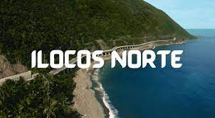
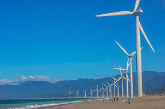
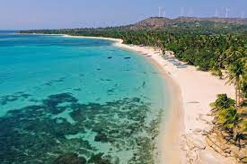

Ilocos Norte

Ilocos Norte (Ilocano: Amianan nga Ilocos; Probinsia ti Ilocos Norte) is a province of the Philippines located in the Ilocos Region. Its capital is Laoag City, located in the northwest corner of Luzon Island, bordering Cagayan and Apayao to the east, and Abra to the southeast, and Ilocos Sur to the southwest. Ilocos Norte faces the West Philippine Sea to the west and the Luzon Strait to the north.
Ilocos Norte is noted for its distinctive geography and culture.[4]: 55 This includes numerous examples of well-preserved Spanish colonial era architecture, particularly Saint William’s Cathedral in Laoag with its sinking bell tower done in the Earthquake Baroque style;[5] the St. Augustine Church in Paoay which is one of UNESCO's World Heritage Sites in the Philippines,[6] and the Cape Bojeador Lighthouse. Famous geographical features include the La Paz Sand Dunes, the beaches of Pagudpud, and the eroded calcarenite Kapurpurawan rock formation in Burgos.

It is the birthplace of several notable Philippine leaders including former Philippine President Ferdinand E. Marcos,[8] Philippine Revolutionary War general Artemio Ricarte, and Iglesia Filipina Independiente founder Gregorio Aglipay.[9] Three of the Philippines' wind farms are located in Ilocos Norte, located in Burgos, Pagudpud and Bangui, with the latter being the first wind power generation plant in the Philippines.
Long before the arrival of the Spaniards, there already existed an extensive region (consisting of the present provinces of Ilocos Norte, Ilocos Sur, Abra and La Union) renowned for its gold mines. Merchants from Japan and China would often visit the area to trade gold with beads, ceramics and silk. The Austronesian inhabitants of the region called their place samtoy, from sao mi toy, which literally meant "our language here"
In 1571, when the Spanish conquistadors had Manila more or less under their control, they began looking for new sites to conquer. Miguel Lopez de Legazpi's grandson, Juan de Salcedo, volunteered to lead one of these expeditions. Together with 8 armed boats and 45 men, the 22-year-old voyager headed north. On June 13, 1572, Salcedo and his men landed in present-day Vigan and then proceeded towards Laoag, Currimao and Badoc. As they sailed along the coast, they were surprised to see numerous sheltered coves (looc) where the locals lived in harmony. As a result, they named the region Ylocos and its people Ylocanos.
As the Christianization of the region grew, so did the landscape of the area. Vast tracts of land were utilized for churches and bell towers in line with the Spanish mission of bajo las campanas. In the town plaza, it was not uncommon to see garrisons under the church bells. The colonization process was slowly being carried out.
The Spanish colonization of the region, however, was never completely successful. Owing to the abusive practices of many Augustinian friars, a number of Ilocanos revolted. Noteworthy of these were the Dingras uprising (1589) and Pedro Almasan revolt (San Nicolas, 1660). In 1762, Diego Silang led a series of battles aimed at freeing the Ilocano. When he died from his compatriot's bullet, his widow Gabriela continued his cause. However, she too was captured and hanged.

